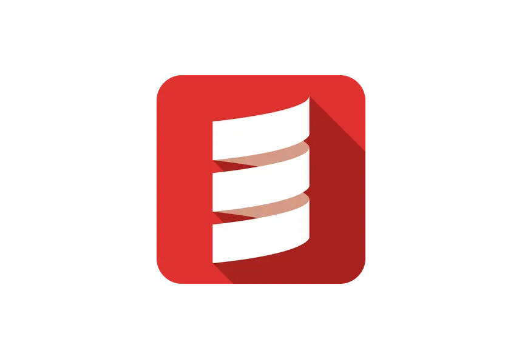
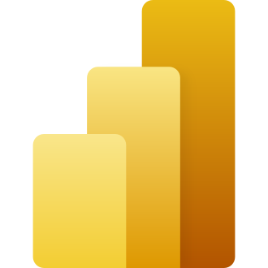
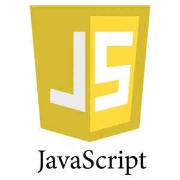
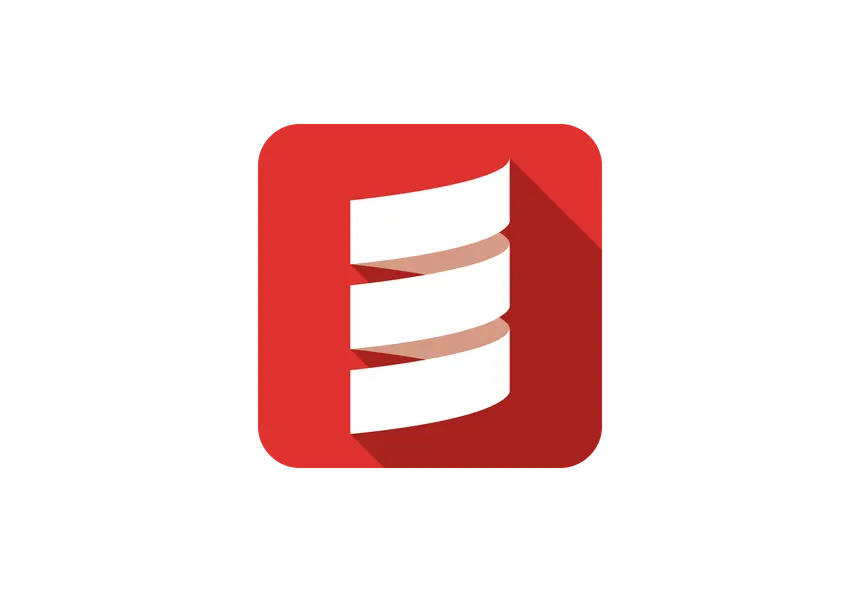
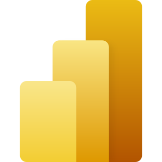
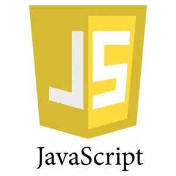
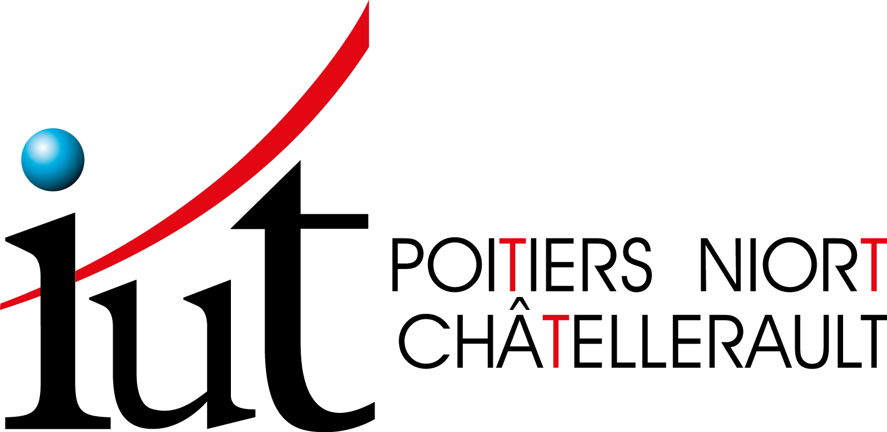
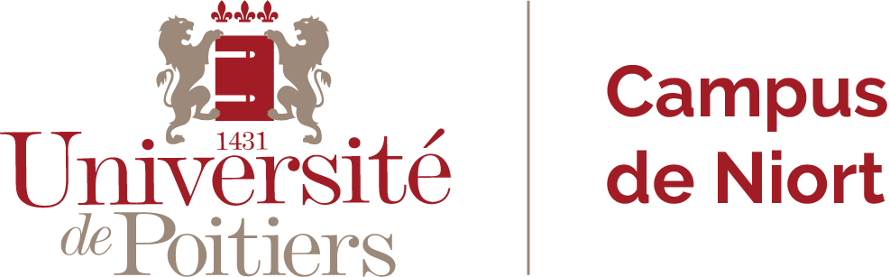
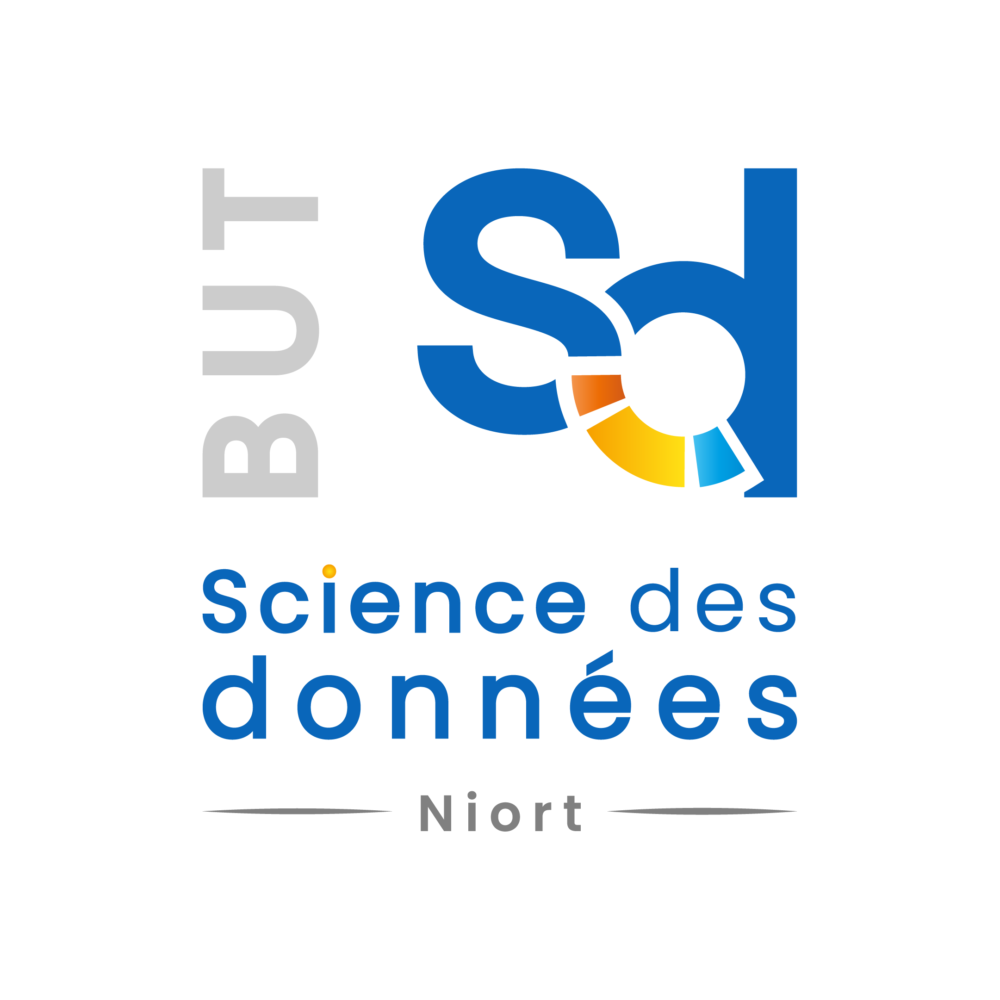

> 📖 Bienvenue sur mon portfolio !
 👤 Télécharger mon CV
👤 Télécharger mon CV

 





Mon portfolio
Ceci est mon portfolio universitaire. Il présente mes compétences en data et mes projets réalisés dans le cadre de ma formation.
Vous y trouverez une rubrique "À propos de moi" qui parle de mon parcours, ainsi qu'une section "Mes projets" qui détaille les travaux que j'ai réalisés.
Enfin, une section "Bilan" résume mes compétences et mes objectifs professionnels.
Pour finir, vous trouverez une section "Mon alternance" qui présente mon expérience professionnelle actuelle.
N'hésitez pas à parcourir les différentes sections pour en savoir plus sur moi et mon travail !


